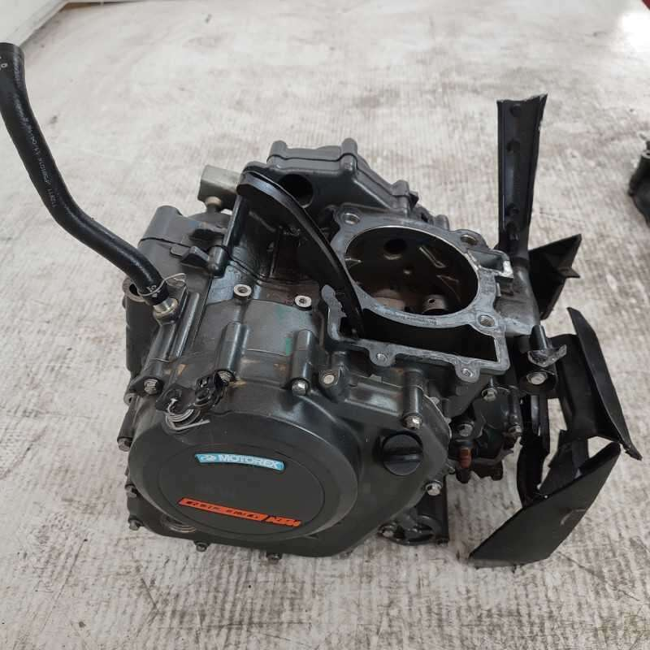
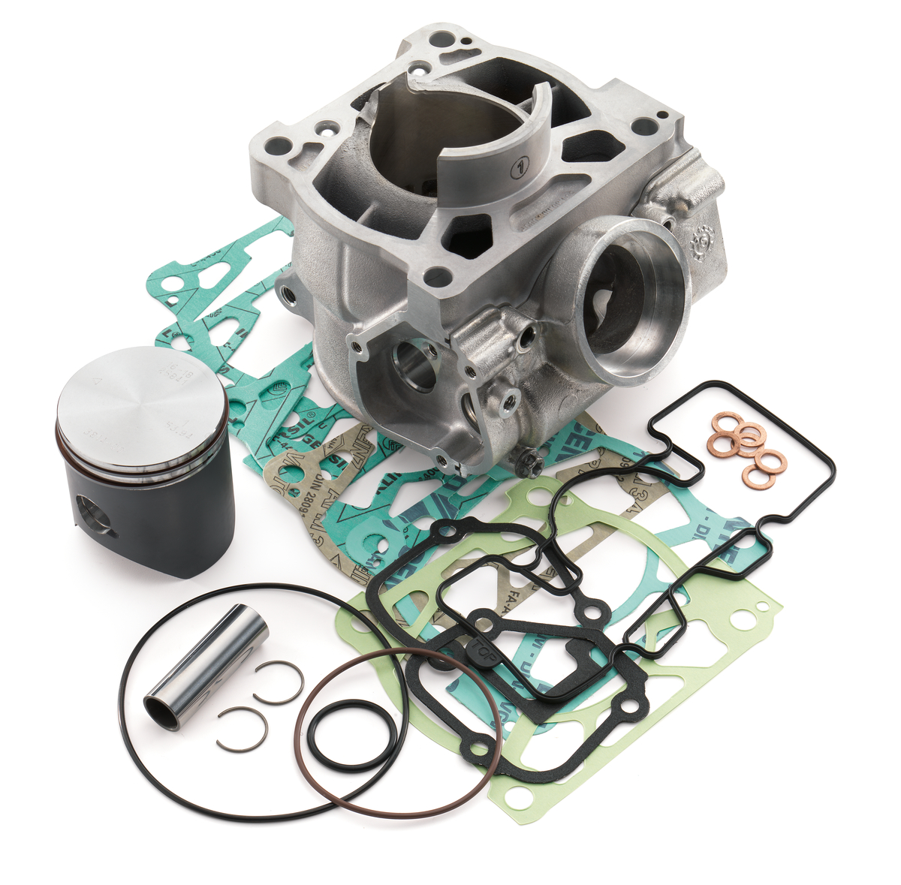

Lavorazioni su motori 2T e 4T pensate per chi usa la moto in fuoristrada, tra mulattiere, speciale e pista.
Tipi di intervento
- Rifacimento top-end (pistone, fasce, spinotto, guarnizioni testa/cilindro).
- Controllo o revisione biella e albero motore, cuscinetti banco.
- Controllo e revisione frizione, campana, dischi e pacco molle.
- Controllo cambio (ingranaggi, forchette, selettore).
- Verifica tenuta dei carter e paraoli.
Motore per allenamento o per gara
Il modo in cui viene preparato un motore cambia molto in base all’uso:
- Allenamento / uso amatoriale: si cerca un’erogazione piena ma
gestibile, con attenzione a consumi e durata.
- Uso agonistico: si lavora di più su risposta al gas,
allungo e rapidità a prendere giri, accettando tagliandi più frequenti.
Quando è ora di rifare il motore
Alcuni segnali che indicano che il motore va aperto:
- Difficoltà di avviamento rispetto al solito.
- Perdita di compressione o calo netto di coppia.
- Rumori metallici anomali, battiti o ticchettii.
- Consumo eccessivo di olio (sui 4T) o fumo fuori dal normale (2T).
Galleria motori
Alcuni motori in fase di lavoro in officina.

